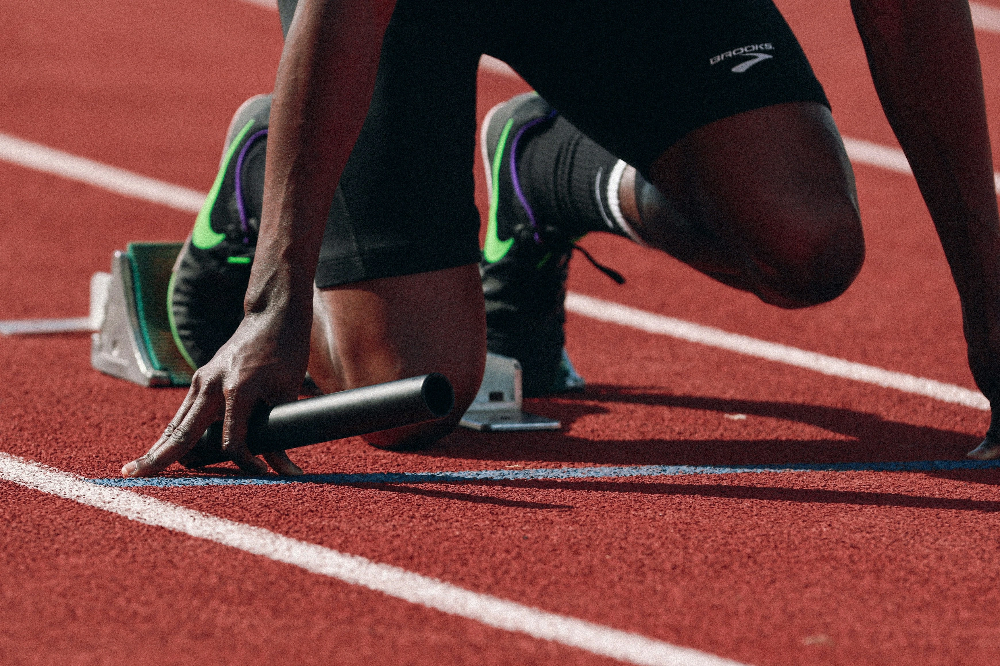

Свежие новости
Для велосипедистов открылась новая трасса за городом — живописный маршрут длиной 25 км с умеренным рельефом. Дорога уже пользуется популярностью среди как начинающих, так и опытных райдеров. Это отличное место для тренировок на выносливость и просто активного отдыха на природе.

В студиях наблюдается рост интереса к пилатесу, особенно среди тех, кто проводит много времени за компьютером. Эти тренировки помогают улучшить осанку, снять мышечное напряжение и укрепить мышцы корпуса. Всё больше новичков выбирают пилатес как мягкий, но эффективный способ вернуться в форму.
Прошлая неделя порадовала любителей бега: на региональных соревнованиях сразу несколько молодых спортсменов улучшили личные рекорды. Особенно ярко проявили себя участники в спринтерских дисциплинах и на средних дистанциях.
Здоровый сон — лучший тренировочный партнёр
Недосып снижает выносливость и замедляет восстановление. Даже при активных тренировках тело не прогрессирует без полноценного сна. Старайтесь спать не менее 7–8 часов, особенно в дни с физической нагрузкой.
Не бегай на прямых ногах
При беге важно слегка сгибать колени — это снижает ударную нагрузку на суставы и предотвращает травмы. Следи за приземлением на середину стопы и старайся держать корпус слегка наклонённым вперёд.
Готовы изменить своё тело и самочувствие? Узнай, с чего начать: упражнения, питание, режим — всё просто и по шагам.
Нет времени? Тренируйся 10 минут — это лучше, чем ничего
Короткие тренировки тоже дают результат. Пять подходов по 2 минуты — и ты уже сделал шаг к своей цели. Главное — регулярность.
Пилатес как способ мягкого восстановления
После интенсивной недели тренировок попробуйте пилатес: он мягко растягивает мышцы, улучшает кровообращение и помогает телу восстановиться без перегрузки.
Хотите тренироваться эффективнее и без травм? Откройте для себя правильные техники и советы от экспертов!
Не пропускай завтрак
Утренний приём пищи запускает обмен веществ и заряжает энергией. Идеальный завтрак для активного дня — белок + сложные углеводы, например: яйца с цельнозерновым тостом или творог с фруктами.
Вода важнее, чем ты думаешь
Даже лёгкое обезвоживание снижает эффективность тренировок и может вызвать судороги. Пейте воду регулярно в течение дня, а не только во время активности.